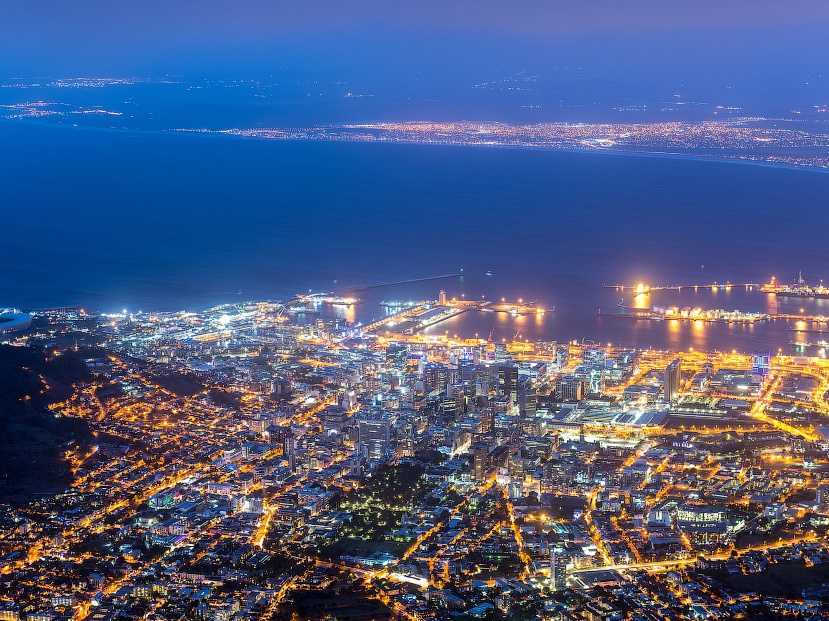
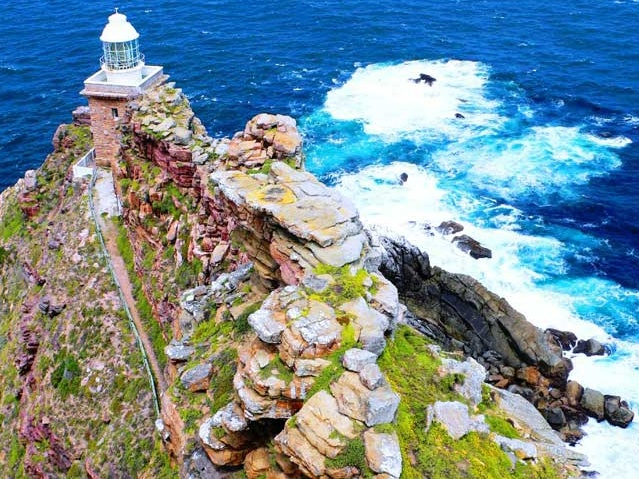
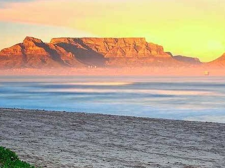
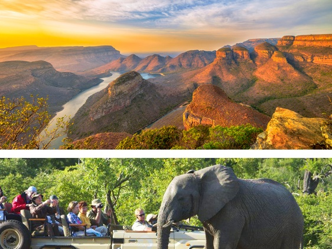

{kind=link}
{kind=link}
{kind=link}
{kind=link}
Длительность: 9 дней
Стоимость: от 7500 евро
Человек в группе: Индивидуально
Что включено:
- международный авиаперелет в бизнес классе Киев-Стамбул-Кейптаун-Йоханнесбург-Стамбул-Киев (Turkish Airlines)
- проживание в указанных по программе отелях 5*;
- индивидуальные трансферы по всему маршруту (машина Toyota Quantum);
- внутренний перелет Кейптаун-Худспрут, Худспрут-Йоханнесбург (эконом класс);
- завтраки в отелях Кейптауна и в лодже Стелленбош, питание по системе "AI" в лодже Парке Крюгера;
- все экскурсии по программе с гидом;
- сафари с гидом- натуралистом (вечернее и на весь день) в открытом джипе;
- полет над Капским полуостровом на вертолете;
- информационная поддержка в ходе тура;
- помощь в получении визы ЮАР;
Дополнительно:
- консульский сбор 27 евро с человека;
- личные расходы;
- дополинтельные услуги;
- дополнительные экскурсии;
Программа путешествия
Путешествия в Южную Африку никак нельзя отнести к «массовому туризму», они доступны немногим.
А с нами у Вас появляется шанс попасть в число избранных!
День 1
Вылет международным рейсом из Киева в 20:50, стыковка в Стамбуле 2 часа 10 минут, прилет в Кейптаун в 12:40 +1 на следующий день (в пути 15 часов 50 минут).
{kind=link}
День 2
Прилет в Кейптаун в 12.40. Встреча в аэропорту с русскоговорящим гидом. Трансфер и размещение в отеле Cape Grace Hotel 5* в номере Table Mountain Luxury Room. По желанию и за дополнительную плату : вечерний круиз на яхте The Only
One по заливу с шампанским и закусками.
Кейптаун — один из красивейших городов мира. Интересная архитектура, прекрасные сады и парки, живописная гавань и необычные горы создают великолепный видеоряд, радующий глаз любого гостя города. Это законодательная столица
(здесь находится парламент страны), столица Западной Капской провинции, а также второй по количеству населения после Йоханнесбурга город страны. Кейптаун – самый «белый» город ЮАР, где количество людей европейского происхождения
превышает население из коренных африканцев.
{kind=link}
День 3
Завтрак. Экскурсия на Мыс Доброй Надежды + пляж пингвинов и круиз к острову морских котиков. Это будет большая и интересная экскурсия на весь день. По дороге к Мысу Доброй Надежды Вы увидите горную гряду "Двенадцать Апостолов", а далее, двигаясь вдоль берега океана к поселку Хаут Бей, насладитесь видами белоснежных пляжей Кемпс Бей. По приезду в поселок, Вы пересядете на туристический кораблик, чтобы отправиться в круиз в гости к морским котикам. После круиза, двигаясь по дороге "Chapman`s Peak Drive", Вы доберетесь до Кейп Поинта - Мысу Доброй Надежды, где с двухсотметровой высоты, можно увидеть место слияния двух океанов: Атлантического и Индийского. После прогулки по мысу и посещения маяка, Вы отправитесь в сторону Саймонс Таун, чтобы увидеть дикую колонию пингвинов в Баулдерс Бич. Возвращение в отель около 17:00, свободное время для отдыха и прогулок по городу.
{kind=link}
День 4
Завтрак. Полет на вертолете над Капским полуостровом.
Свободное время для дополнительных экскурсий:
- Снорклинг с морскими котиками 75 $ с человека;
- Каякинг с дельфинами 39 $ с человека;
- Погружение в клетке с Большой Белой акулой 193 $ с человека;
{kind=link}
День 5
Завтрак. Подъем на Столовую Гору. Вас ждет увлекательное природное "чудо света" - Столовая гора, с её удивительными видами на побережье и город, а также на все окрестности Кейптауна включая горную гряду "Двенадцать Апостолов". Переезд в Стелленбош. В окрестностях Кейптауна раскинулся один из самых больших винных маршрутов в мире (более 500 винных поместий). Вы остановитесь в небольшом колониальном городке, расположившемся в окружении гор в долине изумрудных виноградников. Дегустация лучших сортов южноафриканских вин. Размещение в Delaire Graff Lodges & SPA 5*, Luxury Lodge.
{kind=link}
День 6
Завтрак. Трансфер в аэропорт Кейптауна. Перелет в Худспрут (внутренний авиаперелет). Трансфер и размещение в лодже Kapama Private Game Reserve, Southern Camp, Suite. Обед. Вечернее сафари.
Частный заповедник Капама - это африканский рай. Капама, раскинувшаяся на 13 000 гектаров саванн и прибрежных лесов, представляет собой часть Африки, какой она была раньше. С могучими горами Дракенсберг вдалеке и знаменитым
национальным парком Крюгера на востоке Капама предлагает гостям лучшие сафари по дикой природе.
{kind=link}
День 7
Целый день сафари в парке Крюгер. Именно здесь существует вероятность увидеть всю Большую Африканскую Пятерку (лев, носорог, слон, буйвол, леопард) в полном составе. Расписание сафари активностей согласуется с менеджером лоджа по прибытии: к Вашим услугам: сафари на открытом джипе и пешее сафари в сопровождении опытного гида-натуралиста.
{kind=link}
День 8
Завтрак. Индивидуальный тур на пол дня по Панорамному Пути с англоговорящим гидом.
Эта экскурсия одна из самых популярных в Южной Африке. Вы увидите так называемое «Окно Бога» - место в горах, откуда открывается потрясающий вид на великолепный ландшафт: долины, каньоны, горные цепи, национальный парк
Крюгера, перевалы, каналы и реки. Этот регион отличается неповторимой красотой небольших водопадов, старинной архитектурой маленьких городов, духом времен «золотой лихорадки».
За дополнительную плату можно взять прогулку на вертолете по Панорамному Пути - 3500 $.
{kind=link}
День 9
Завтрак, выселение из лоджа. Индивидулаьный трансфер в аэропорт, перелет в Йоханнесбург (внутренний авиаперелет). По прилету, Вас встретит гид с водителем и Вы отправитесь на обзорную экскурсию по Йоханнесбургу.
Йоханнесбург – современный процветающий город, мегаполис, выросший за сто с небольшим лет из поселка золотоискателей. Вся история этого молодого города отражена в его улицах, домах, культурных и архитектурных сооружениях,
ощутить своеобразие которых вы сможете во время увлекательной прогулки.
После экскурсии, индивидуальный трансфер в аэропорт. Вылет международным рейсом в 19:15, стыковка в Стамбуле 2 часа, прилет в Киев в 09:10 +1 (в пути 13 часов 55 минут).
{kind=link}
Цена: от 7500.00 евро